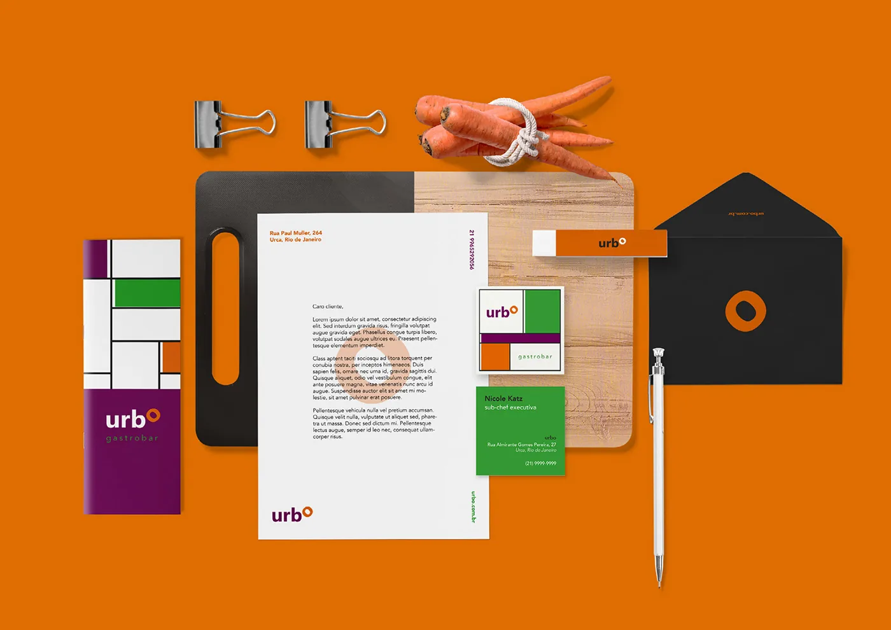
Identidade visual · 2020
Urbo Gastrobar
Identidade de um gastrobar construída a partir de um anel e de um padrão modular que cobre superfícies inteiras sem repetir o logotipo.
- Cliente
- Nicole Katz
- Ano
- 2020
- Área
- Identidade visual
- Tipo
- Acadêmico e profissional
- Parceria
- Isadora Duarte
Contexto
Identidade visual para um gastrobar, desenvolvida em dupla. O projeto vai da marca às aplicações que o cliente usa no dia a dia: papelaria, cartões da equipe, fachada, cardápio, embalagem de delivery, sacola, bottons e site.
Conceito
A marca gira em torno de um “o” que vira um anel laranja, reconhecível sozinho como símbolo. Do anel sai um padrão de blocos retangulares em roxo, verde, laranja e branco, separados por linhas finas, que funciona como azulejaria.
Sistema visual
- Marca “urb + anel” com grade de construção documentada, em versão horizontal e símbolo isolado.
- Paleta de quatro cores — roxo, laranja, verde e preto — com branco como respiro.
- Lao UI para display e Avenir LT Std para apoio, com a família prevista em todos os pesos.
- Padrão modular de blocos aplicado em cheio na sacola, no cardápio, na embalagem e no site.
- Assinatura testada em quatro fundos de cor, para garantir leitura em qualquer aplicação.
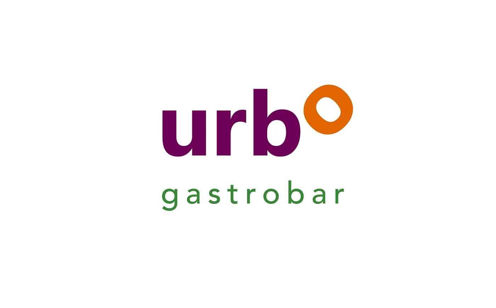
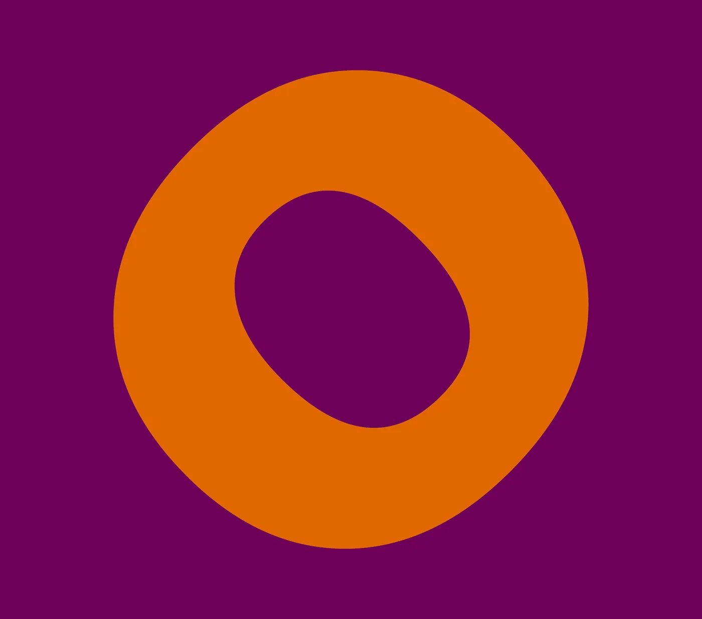
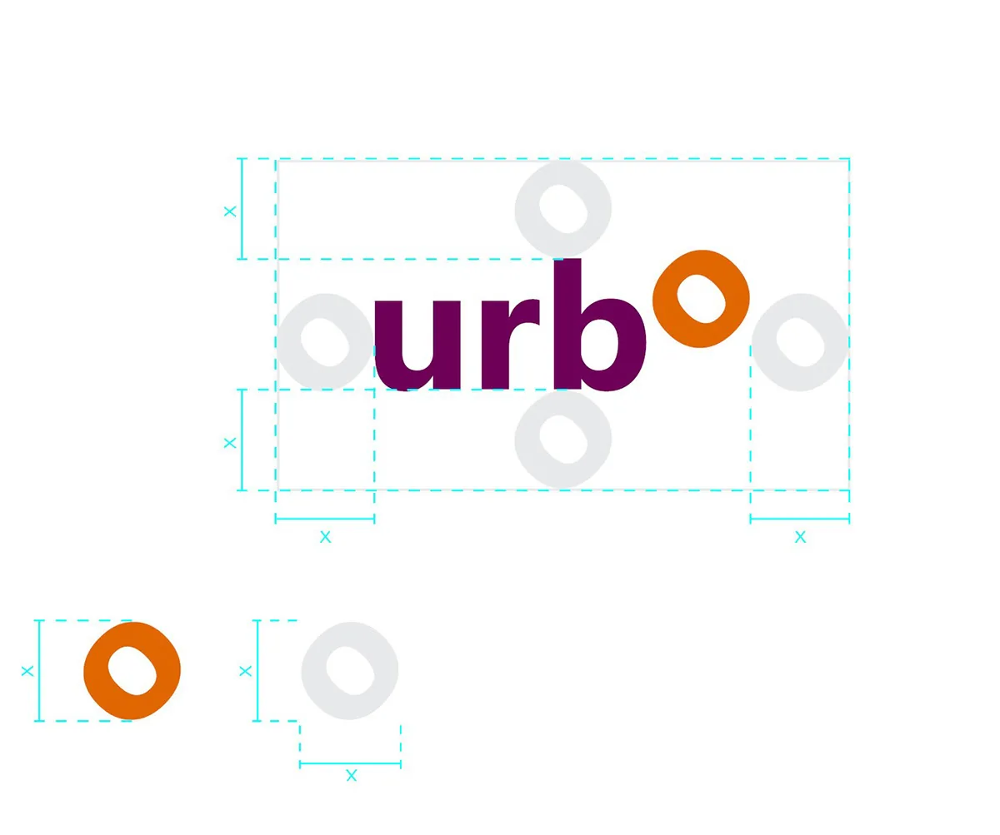
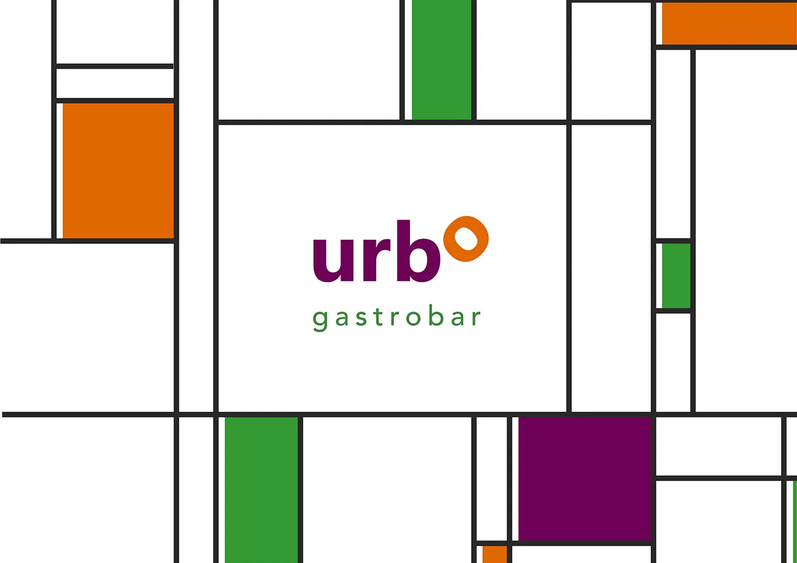
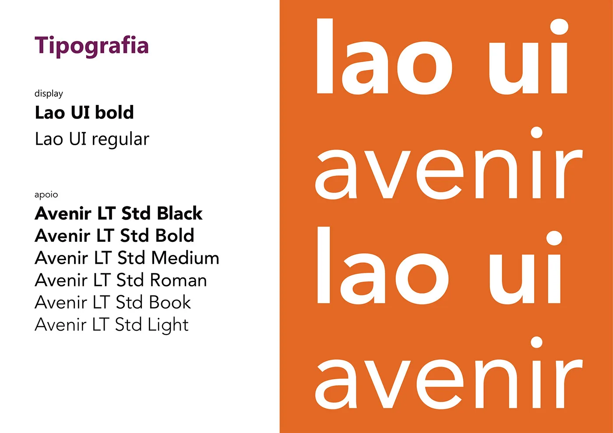
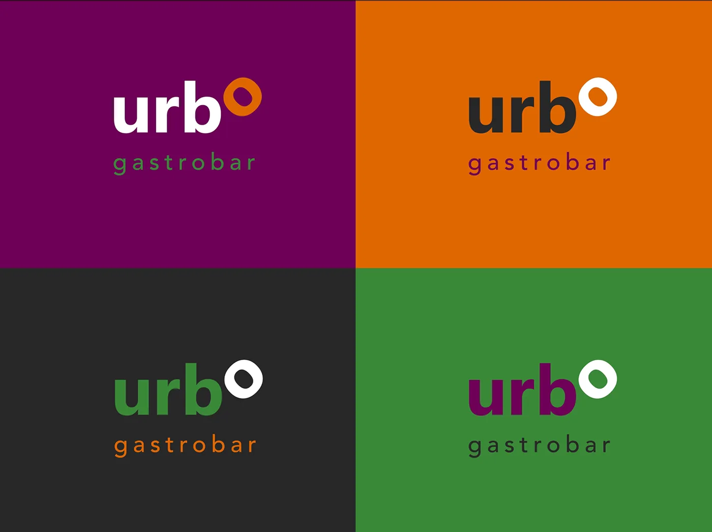
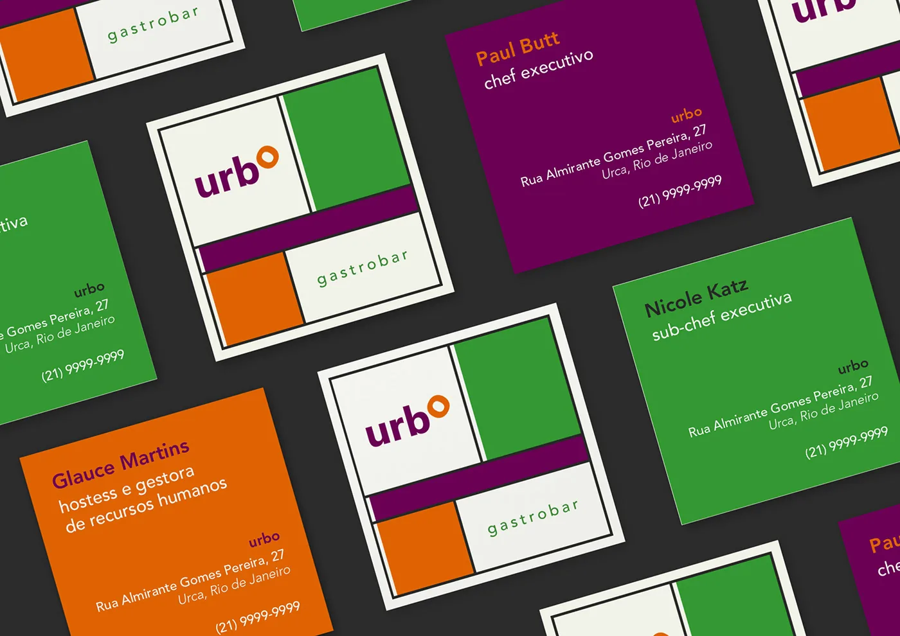
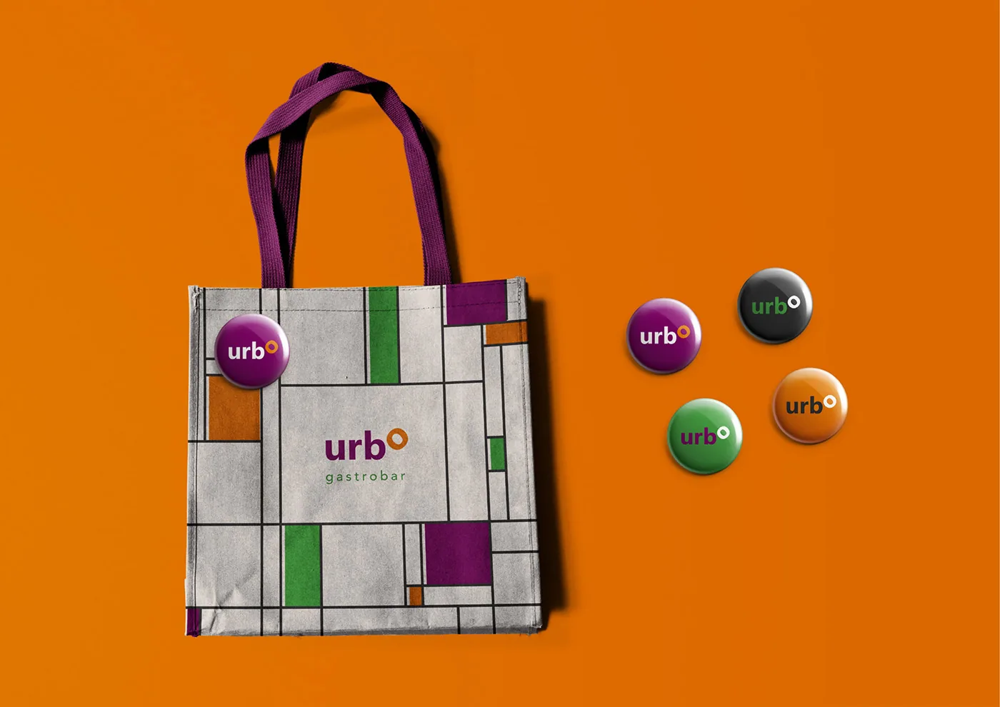
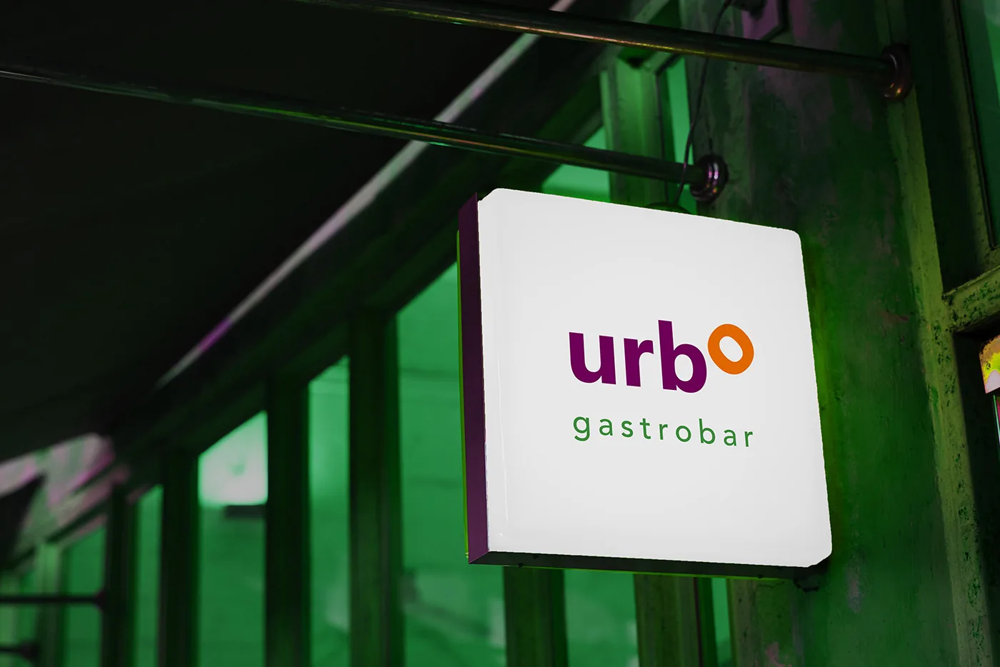
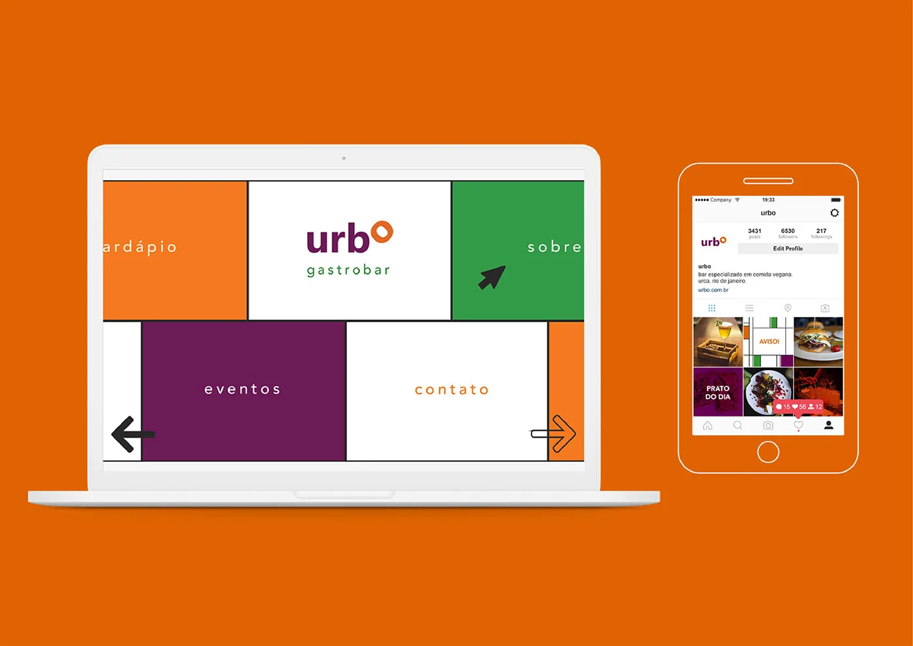
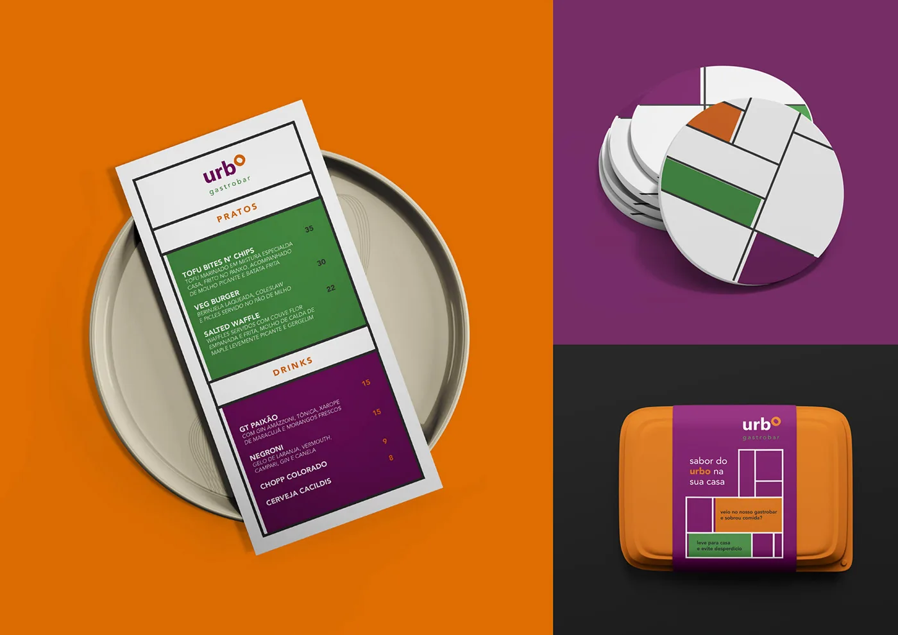
Aplicações
Cartões de visita nominais da equipe do salão e da cozinha, papelaria e envelope, placa de fachada, sacola de tecido, bottons, cardápio digital, site desktop e mobile, e embalagem de delivery.
Créditos
Rafaela Senceite e Isadora Duarte. Cliente: Nicole Katz.